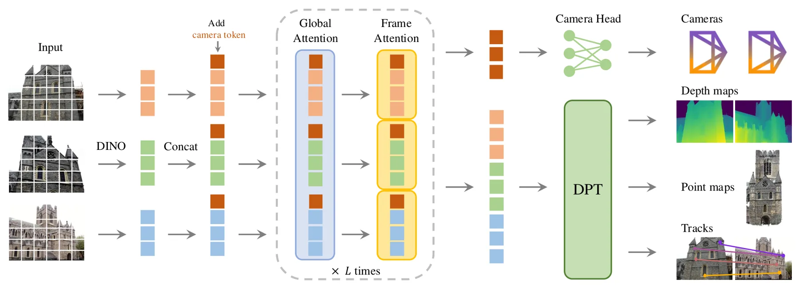
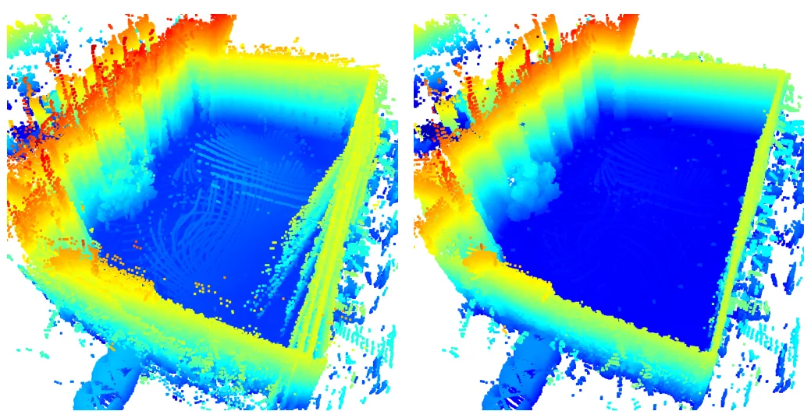
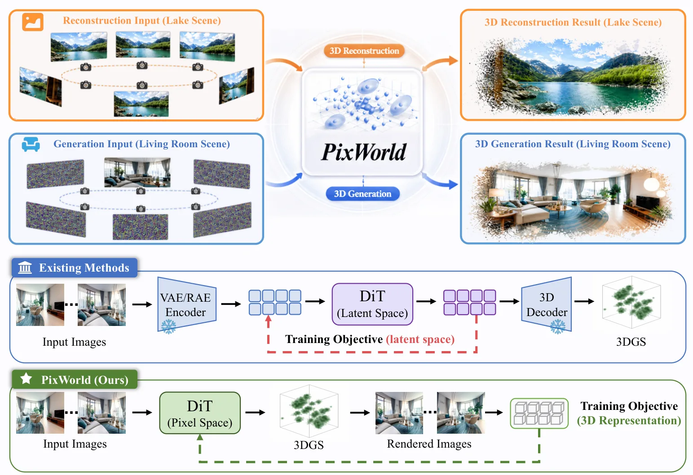

新论文 · 日期 2026-07-03 · score 18 · cs.CV, cs.GR, cs.RO
作者：Anurag Dalal, Daniel Hagen, Kjell G. Robbersmyr, Kristian Muri Knausgård
评分 9.2/10
3DGS三维重建基础模型初始化相机位姿优化近实时建图
一句话工作总结：用 3D foundation model 替代 COLMAP/SfM 初始化，把 3DGS 快速推向近实时可用重建。
本文提出一种无需传统 SfM 的快速高质量 3D Gaussian Splatting 重建方法：利用 3D 基础模型提供相机位姿和点云初始化，再通过深度引导损失联合优化相机位姿与 Gaussian primitives，并加入 MLP 位姿细化以改善稀疏视图场景。实验显示该方法在 Mip-NeRF 360、Tanks and Temples 和 RobustNeRF 上达到有竞争力的重建质量，同时把每个场景训练时…
This paper introduces a fast method for high-quality 3D Gaussian Splatting (3DGS) reconstruction without traditional Structure-from-Motion (SfM). The proposed approach leverages 3D Foundation Models (3DFMs) fo…

新论文 · 日期 2026-07-07 · score 11 · cs.CV
作者：Xiyu Zhang, Jingyu Zhuang, Hongjia Zhai, Zizheng Yan
评分 8.7/10
3DGS无位姿输入前馈重建外观条件化新视角合成
一句话工作总结：无位姿 sparse-view 3DGS 的前馈路线，重点在几何/外观解耦和光照变化鲁棒性。
WildSplat 面向无位姿、光照不一致的野外图像，提出外观条件化的新视角合成 3DGS 框架。方法通过几何分支提取外观不变结构并联合预测相机位姿，通过外观分支注入目标外观线索，并用多参考联合训练缓解特征纠缠，在稀疏输入下实现单次前向的高质量 NVS 和外观编辑。
While feedforward 3D reconstruction excels at efficient novel view synthesis, it typically falters when faced with scenes under varying illumination. To this end, we introduce WildSplat, the first feedforward…

新论文 · 日期 2026-07-05 · score 10 · cs.RO
作者：Chin Yung Anson Hon, Kaicheng Zhang, Sen Wang
评分 9/10
LiDAR SLAMBundle Adjustment点云配准LiDAR NeRF神经地图
一句话工作总结：把 LiDAR NeRF、点云配准和位姿 bundle adjustment 合到同一后端优化框架。
该工作分析 LiDAR NeRF 与 RGB NeRF 的关键差异，指出体采样密度对 LiDAR NeRF 表现有重要影响，并据此提出 NeLD-BA：使用高效 LiDAR ray 体采样来联合优化 LiDAR 地图和传感器位姿。论文在 Newer College 与 FusionPortable 数据集上展示了多视点点云配准和 3D mapping 的强性能，并计划开源代码。
Recent research has achieved remarkable novel view rendering and scene reconstruction results with Neural Radiance Field (NeRF), including extensions to the LiDAR modality. Few studies have, however, explored…

新论文 · 日期 2026-07-07 · score 9 · cs.CV
作者：Xinze Li, Yiyuan Wang, Pengxu Chen, Wentao Fan
评分 8.4/10
流式三维重建在线建图状态可靠性ATECUT3R
一句话工作总结：根据场景状态可靠性动态调节更新步长，减少在线三维重建长期漂移和状态污染。
ReCal3R 针对流式 3D reconstruction 中 recurrent scene state 反复更新导致历史可靠信息被噪声覆盖的问题，估计状态 token 的可靠性，并结合 token 对齐、状态重建残差和近期更新压力来校准 token-wise learning rate。作为 CUT3R 的免训练校正规则，它在长序列 pose、depth 和 reconstruction 指标上取得明显提升，…
Streaming 3D reconstruction relies on a compact recurrent scene state to process long image streams in linear time and bounded memory. However, repeated updates can gradually corrupt this state, causing reliab…

新论文 · 日期 2026-07-06 · score 9 · cs.CV
作者：Keito Abe, Kaede Shiohara, Takashi Otonari, Toshihiko Yamasaki
评分 8/10
动态场景重建3DGS单目视频人体-场景在线重建
一句话工作总结：单目视频中同时前馈重建动态人体和静态场景，是动态 3DGS 场景表示的重要线索。
GUSH3R 从单目人-场景视频中以前馈方式在线重建动态人体和静态场景，把二者统一表示为几何一致且可新视角合成的 3DGS primitives。该方法旨在解决动态人体、相机运动和静态背景同时存在时的重建与渲染问题，并相比优化式方法显著提高推理效率。
Reconstructing dynamic human-scene environments from monocular videos is a challenging problem that requires jointly modeling scene geometry, camera motion, and non-rigid human dynamics while enabling photorea…

新论文 · 日期 2026-07-06 · score 7 · cs.RO
作者：Kaixin Feng, Zhichao Wen, Zhaohong Liao, Xin Xia
评分 8.9/10
GNSS/INS/LiDAR航向估计LIO轨迹对齐城市峡谷
一句话工作总结：用 LIO 局部轨迹与 GNSS 观测反复窗口对齐，解决 GNSS 断续场景下航向漂移。
WinTA-GIL 针对复杂环境中航向估计弱可观、GNSS 信号间歇可用和 IMU 漂移累积的问题，利用 LiDAR-Inertial Odometry 的局部高精度轨迹与过滤后的 GNSS 观测做时间窗口一致性优化。方法引入状态判别驱动的自适应重估机制，在需要时触发航向校正，以抑制长期导航中的航向漂移。
Although multi-source fusion positioning systems have achieved significant progress, accurate and reliable heading estimation remains a critical challenge due to the lack of gravitational constraints and the i…

新论文 · 日期 2026-07-07 · score 6 · cs.CV
作者：Sensen Gao, Zhaoqing Wang, Qihang Cao, Dongdong Yu
评分 7.6/10
3D 生成三维重建像素空间扩散几何感知损失基础模型
一句话工作总结：直接在像素空间监督 3D 扩散，把重建和生成统一到一个几何感知模型中。
PixWorld 把 3D reconstruction 和 3D generation 统一到像素空间扩散范式中，避免 latent-space 方法中由 VAE/RAE 编码引入的信息损失。它直接在渲染图像上定义扩散监督，并额外引入 3D foundation model 特征空间中的几何感知损失，以提供更结构化的 3D 监督。
3D reconstruction and generation are commonly tackled by separate paradigms: pixel-based regression for reconstruction, and latent diffusion for generation. Recent works attempt to unify them in latent space,…
新论文 · 日期 2026-07-04 · score 6 · cs.CV
作者：Gopi Raju Matta, Reddypalli Trisha, Vemunuri Divya Madhuri, Kaushik Mitra
评分 8.1/10
运动模糊SfM 初始化3DGS事件相机概率细化
一句话工作总结：用 dense tracking 初始化、概率 densification 和物理成像模型，让严重运动模糊下的 3DGS 重建可启动。
PRISM3D 解决极端运动模糊图像中传统 SfM 失败导致 3D reconstruction 难以启动的问题。方法利用 VGGSfM 进行鲁棒初始化，通过 MCMC 概率几何 densification 稳定稀疏噪声几何，并用连续 Bézier trajectory 建模物理成像；扩展版本 PRISM3D-E 进一步结合事件流作为高时间分辨率结构先验。
We address the inverse problem of blind 3D scene reconstruction from extremely motion-blurred images, a scenario where traditional Structure-from-Motion (SfM) pipelines fail. Existing approaches typically circ…
新论文 · 日期 2026-07-07 · score 5 · cs.CV, cs.GR
作者：Gal Fiebelman, Hadar Averbuch-Elor, Sagie Benaim
评分 7.2/10
4D 场景多视角视频扩散模型几何一致性动态场景
一句话工作总结：把 3D 重建作为多视角动态视频生成的几何桥，服务长时 4D 一致性。
MV-Forcing 面向长时、多视角一致的动态场景视频生成，把时间自回归与视角自回归组合在单个 diffusion model 中，并利用自回归 3D reconstruction model 在连续视角之间构建 4D 几何桥接。训练中引入联合去噪和 spatio-temporal self-forcing，以减少训练-推理暴露偏差并支持任意长度与视角数量生成。
Recent advances in video diffusion models have enabled either long single-view generation through temporal autoregression, or short multi-view synthesis through bidirectional attention. However, generating lon…